// a course in GLSL shaders
Shader Fragments
Learn to make images, 3D worlds, simulations and music visuals out of math, starting from what a pixel is. Every idea is explained from zero, every example runs live, and every word in the code explains itself.
running live · you build this in Chapter 12
Read on the leftEach chapter is one long page. Examples run live inside the text.
Play on the right“Edit in workbench” loads any example into the editor next to the text.
Poke the numbersClick a number in the code and drag the slider. Hover a word to see what it means.
Inspect any pixelHover the workbench canvas to read a pixel’s coordinates and color.
// the course
Contents
Part I · Foundations
How a shader thinks, and all the math it needs, from zero.
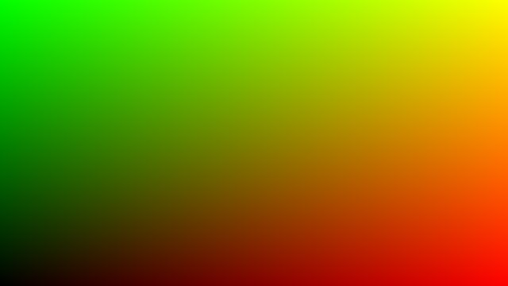
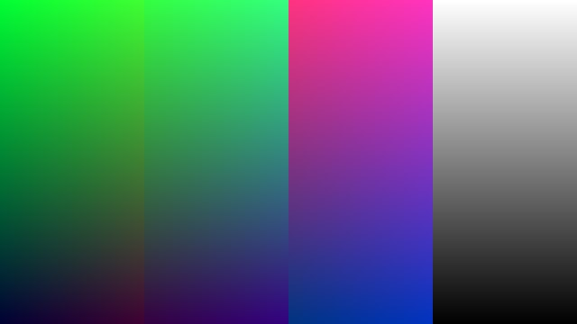
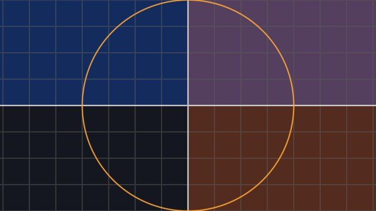
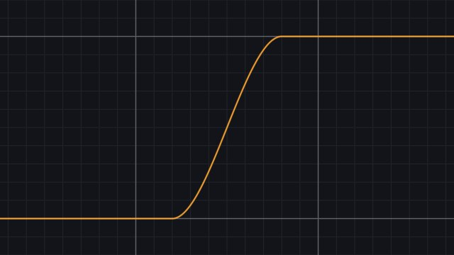
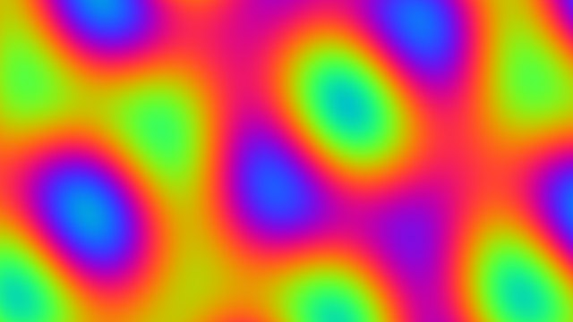
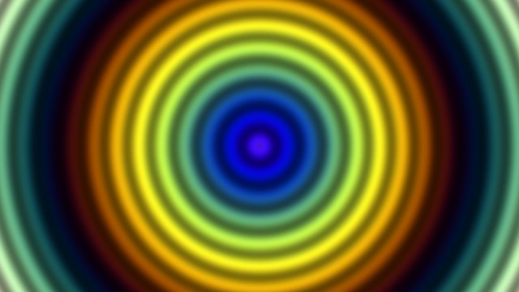
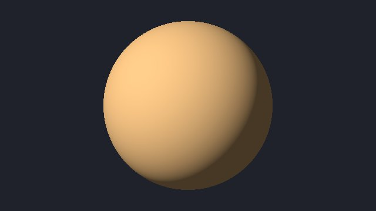
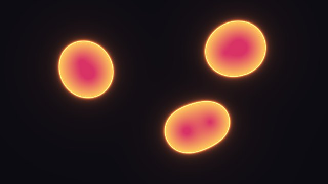
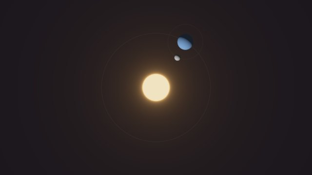
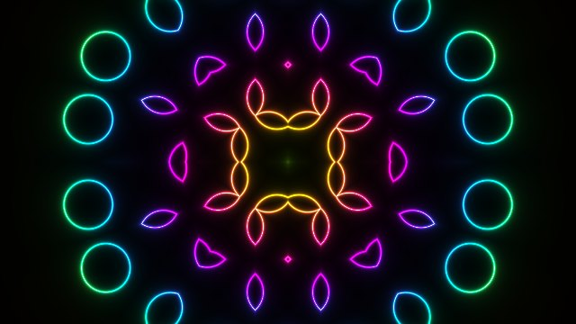
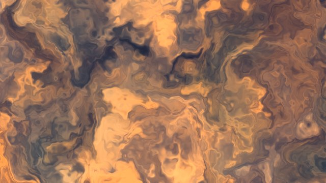
Part II · Make things
Generative art, 3D worlds, living simulations and music visuals.
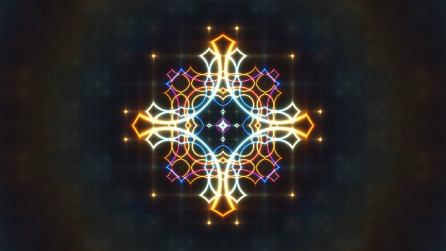
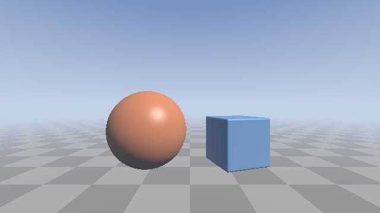
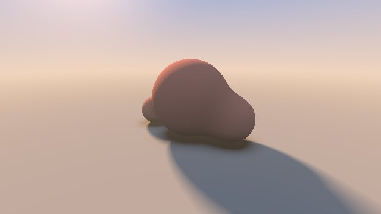
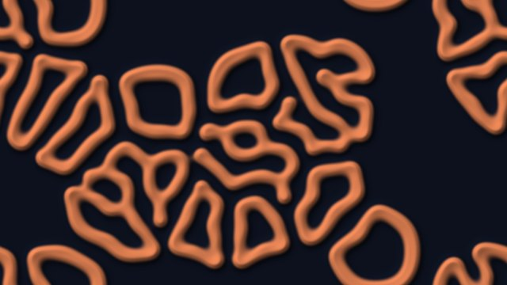
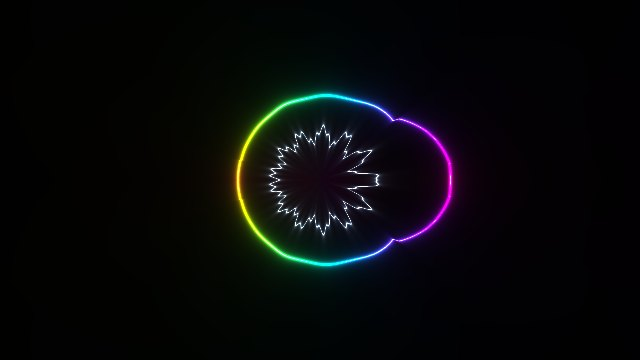
Part III · Under the hood
How the GPU runs your code, a runner built from scratch, and debugging.
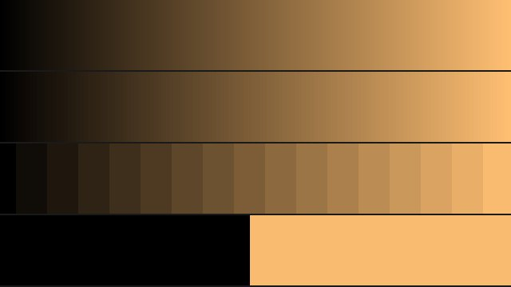
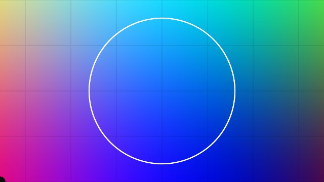
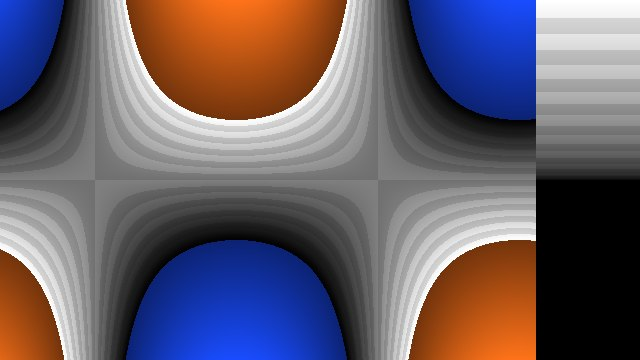
Part IV · Share it
Shadertoy, p5.js, Genuary and where to go next.
// the wider world
The shelf
The Book of ShadersThe classic free book by Patricio Gonzalez Vivo and Jen Lowe.
Inigo Quilez: articlesDistance functions, noise, lighting. The reference shelf.
ShadertoyWhere shader people share. Every example here runs there unchanged.
kishimisu: Intro to Shader Art CodingTwenty minutes; pairs with Chapter 12.
GraphtoySee the shape of any function.
Genuary31 prompts for code art every January.